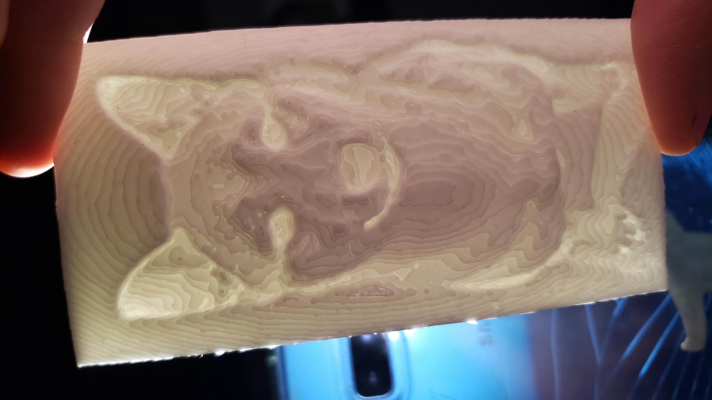
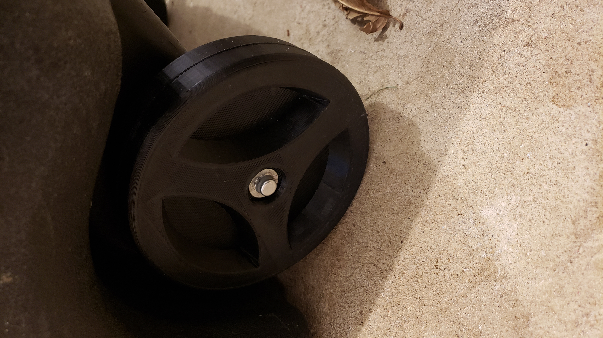
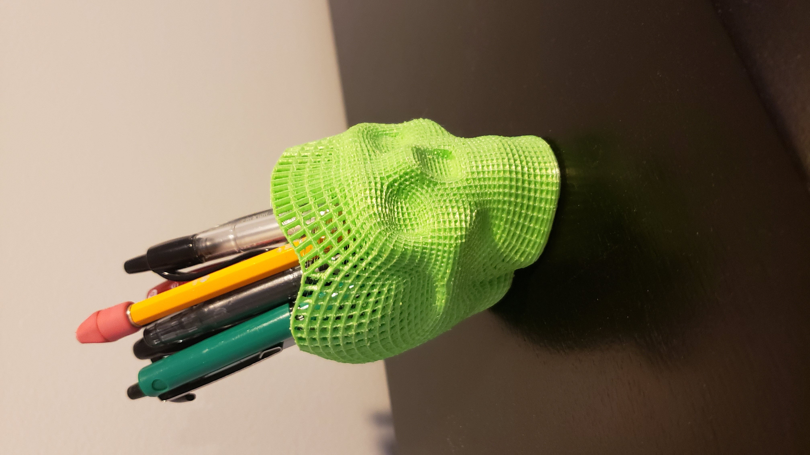
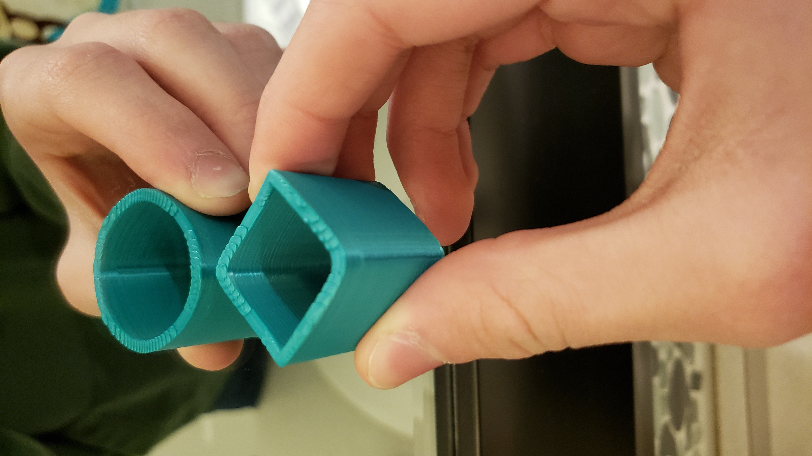
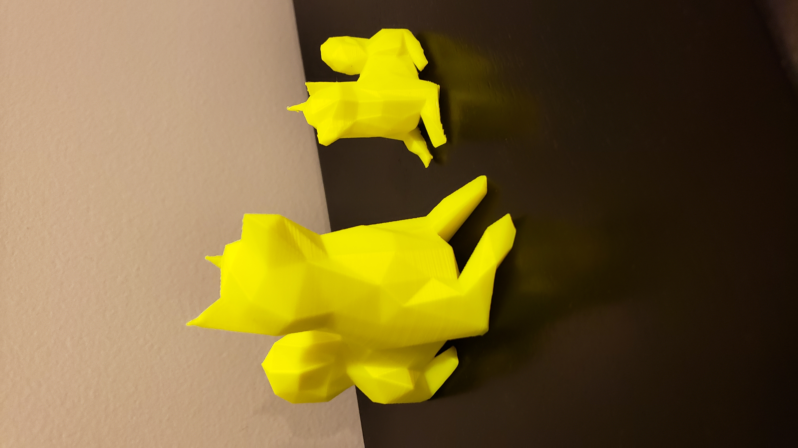
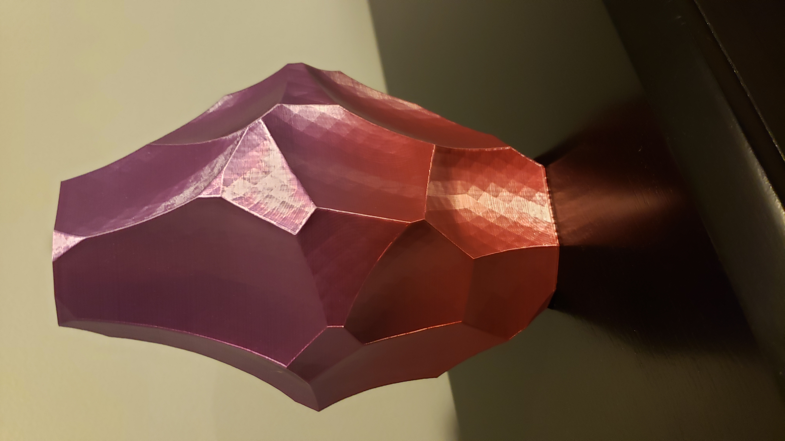
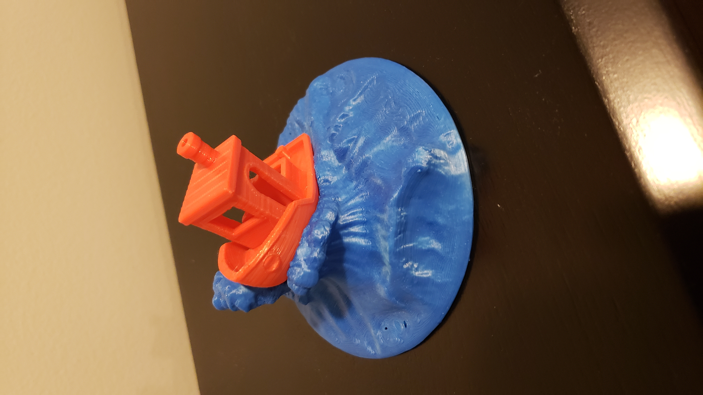
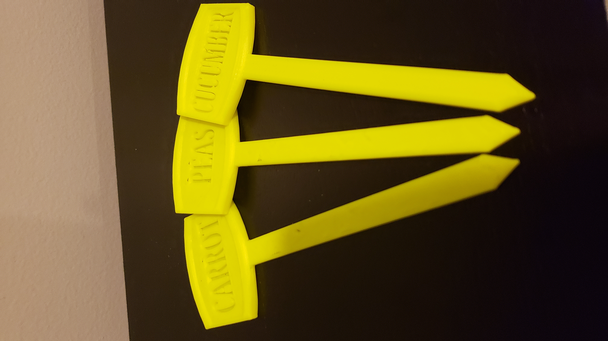
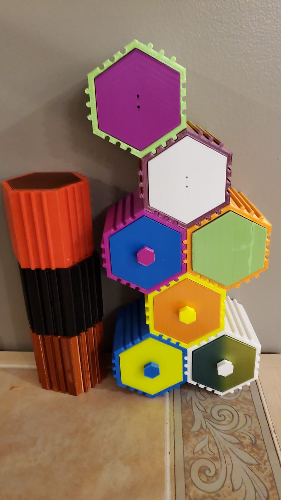

Example Prints
|  |

|
 |  |  |
|
This print is a called a lithophane. It uses the thickness and thinness of the plastic in certain areas to create an image when light is shone behind it. This is a lithophane of my dog, Phoebe. |
This print is a section of Lower Manhattan in New York City. It is a good display of the precise detail work achievable through 3D printing shown in the small and detailed buildings. |
This wheel is a fantastic example of a functional 3D print. The wheel on this garbage can had been broken for a long time and this one was custom designed and printed to fit the exact dimensions of the garbage can. |
This is a hollow skull with a wireframe mesh design. This skull shows the functionality of 3D printing because of its use as a pencil cup. It looks cool on a desk and it has a good use. |
This "squircle" is an illusion where the shape looks like a square from one angle and a circle from another. The print is shown in a mirror so that both sides can be seen at once. |
|  |  |  |  |  |
|
These two prints are a good display of the sizing feature in the slicer. These are both the same model, but one is scaled much smaller than the other. |
This vase is a good example of the many varieties of PLA filament that are available. This vase was printed with a multi-colored gradient filament. It is also slightly light relflective. |
This mutli-colored print is actually two parts; the red boat and the wave were printed seperately. The wave has a small space where the boat sits. The two parts were designed to fit together so that it could be printed in two colors. |
These little signs are another functional use of 3D printing. You can put them in plant pots and boxes to signify what kind of plants are in the container. |
These modular hex drawers are another example of functional 3D printing. Each drawer is able to open and close and hold small items. They were printed in different colors and material types. |